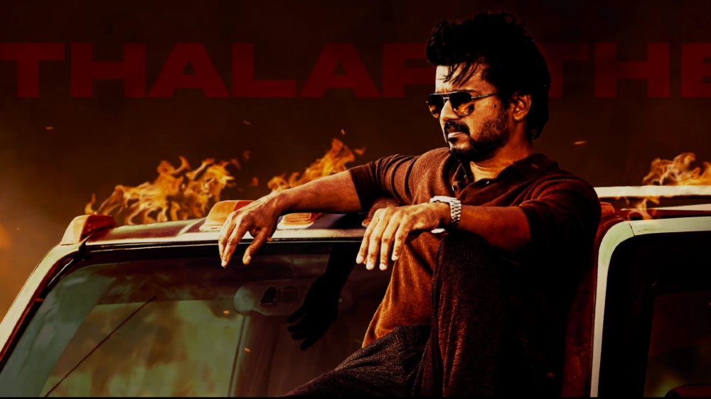

Actor|Dancer|politician
Joseph Vijay Chandrasekhar (born 22 June 1974), known professionally as Vijay, is an Indian actor and playback singer who works predominantly in Tamil cinema. In a career spanning in just over 3 decades, Vijay has acted in over 65 films and is one of the most commercially successful actors in Tamil cinema with multiple films amongst the highest-grossing Tamil films of all time and is amongst the highest paid actors in India. Born in Madras, Vijay made his debut as a child actor in the Tamil film Vetri in 1984. After a view roles as a child actor, he played the lead in the film Naalaiya Theerpu in 1992. Vijay continued doing lead roles for the next few years with mixed results, notable films amongst them included Poove Unakkaga, Love Today, Kadhalukku Mariyadhai, Thulladha Manamum Thullum and Kushi. In 1998, he was awarded Kalaimaamani by the Government of Tamil Nadu.
In 1998, Vijay was awarded the Kalaimaamani by the Government of Tamil Nadu and Vijay received an honorary doctorate from the Dr. M.G.R. Educational Institute for of his achievements in the film industry in 2007.[124] Vijay was awarded the Best International Actor of 2018 in the United Kingdom for his role in Mersal.[125] He has received numerous other awards and accolades for his acting.[126][127]